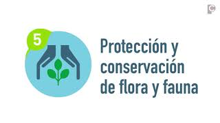

El dilema del desarrollo económico
En la actualidad, el debate entre el medio ambiente y el desarrollo económico es un tema crucial que afecta a nivel global. Por un lado, el desarrollo económico es esencial para mejorar la calidad de vida, generar empleo y reducir la pobreza. Por otro lado, la protección del medio ambiente es vital para garantizar la sostenibilidad a largo plazo y preservar los recursos naturales para las futuras generaciones.

Impactos ambientales del desarrollo económico
El desarrollo económico puede tener impactos negativos significativos en el medio ambiente. La explotación de recursos naturales, la deforestación, la contaminación del aire y del agua, y la generación de residuos son solo algunos ejemplos de cómo el crecimiento económico puede afectar negativamente al planeta. Es crucial encontrar formas de mitigar estos impactos y promover prácticas sostenibles que permitan un desarrollo económico responsable.
